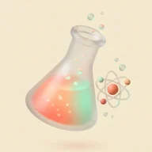
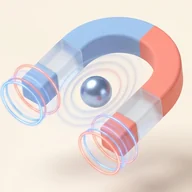
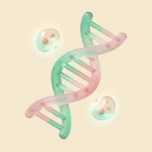

ทำข้อสอบเพื่อประเมินตัวเอง ทบทวน และเข้าใจหลักการมากขึ้น ทุกข้อมีเฉลยพร้อมแนวคิด และบอกได้ว่าพลาดตรงไหน

แบบฝึกหัด ม.4–ม.6 · A-Level · IJSO · NETSAT

การเคลื่อนที่ แรง ไฟฟ้า

เซลล์ พันธุศาสตร์ ระบบร่างกาย
ธรณี บรรยากาศ ดาราศาสตร์
เลือกชุดข้อสอบจริง หรือเลือกระดับชั้นแล้วเลือกเรื่องที่อยากฝึก
ทำครบทุกข้อก่อน แก้คำตอบได้ ดูผลวิเคราะห์ตอนส่ง
เฉลยและวินิจฉัยทันทีหลังตอบแต่ละข้อ
ใส่ชื่อก่อนเริ่มทำข้อสอบ ชื่อจะแสดงบนผลสอบ รูปกระดาษทด และ Leaderboard
มวลอะตอมตามค่าที่ข้อสอบ สทศ. กำหนดให้ · เส้นหนาคือเส้นขั้นบันได
เลื่อนตารางไปทางซ้าย–ขวาได้ · หมุนจอแนวนอนจะเห็นทั้งตาราง
ติวตัวต่อตัว ม.4–ม.6 · A-Level · สอวน.
200 ฿ต่อชั่วโมง · ตัวต่อตัว · คอร์สแบบแพ็กเกจถูกลงอีก
นักเรียนที่ใส่ชื่อครูตรงกับชื่อนี้ จะส่งกระดาษทดและผลสอบเข้า Drive ของครู · ใช้ได้หลังผู้ดูแลเปิดให้